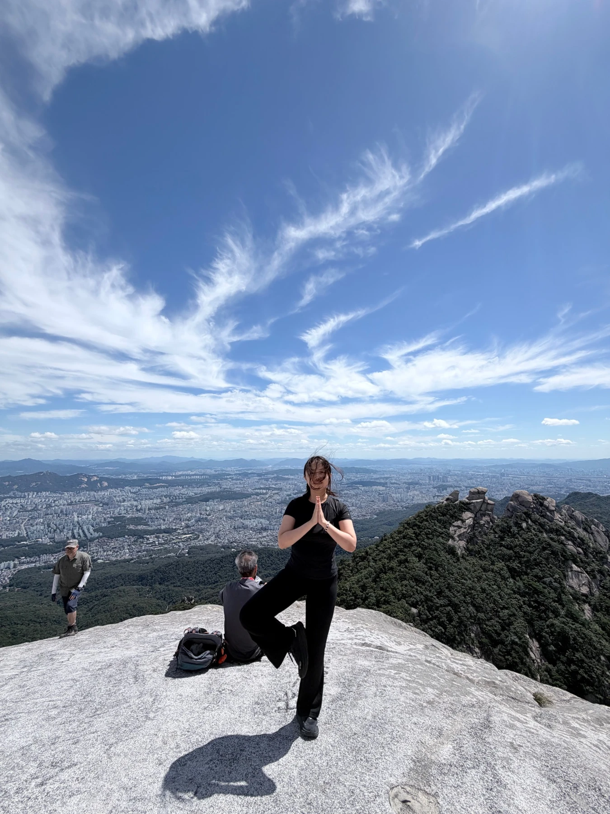

2025.05.01 — 2025.06.20
휴머노이드 로봇 UI/서비스 컨셉 발굴
연구보조원으로 연구활동 및 연구 지원에 참여.
Robot · UI · Service Concept회사의 비밀유지서약서를 작성하여, 자세한 프로젝트 내용과 산출물은 공개하지 않았습니다.
KIM YEJUN · 김예준
사용자의 행동과 일상 속 불편에서 질문을 찾고, AI와 XR의 가능성을 서비스로 구체화합니다. 상상력과 추진력을 바탕으로 아이디어를 기획과 프로토타입으로 옮기며, 데이터로 설계의 근거를 더해가고 있습니다.
성신여자대학교 서비스디자인공학과

SELECTED WORK
RESEARCH EXPERIENCE
성신여자대학교 연구산학협력단
산학연구 · 연구보조원
2025.05.01 — 2025.06.20
연구보조원으로 연구활동 및 연구 지원에 참여.
Robot · UI · Service Concept회사의 비밀유지서약서를 작성하여, 자세한 프로젝트 내용과 산출물은 공개하지 않았습니다.
2025.03.03 — 2025.03.28
연구보조원으로 연구활동 및 연구 지원에 참여.
Generative AI · Concept Research회사의 비밀유지서약서를 작성하여, 자세한 프로젝트 내용과 산출물은 공개하지 않았습니다.